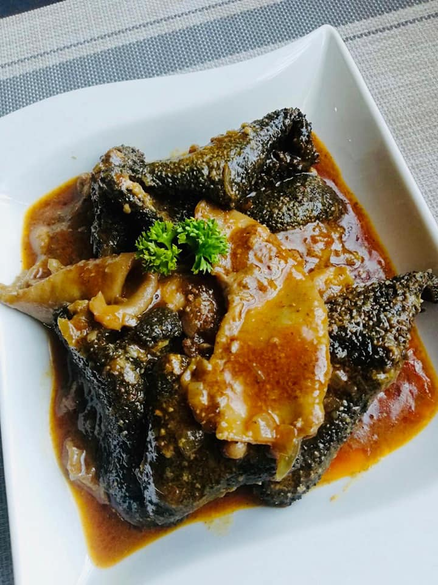

Mogodu - Interstines
Prep time : 2 hours
Ingredients
Cleaned Mogodu
Onion
Beef curry cube
Steps
Boil your mogodu until done, but not too done
When all the water is done, add onion, cube, fry for a few minutes
Add water, and cover